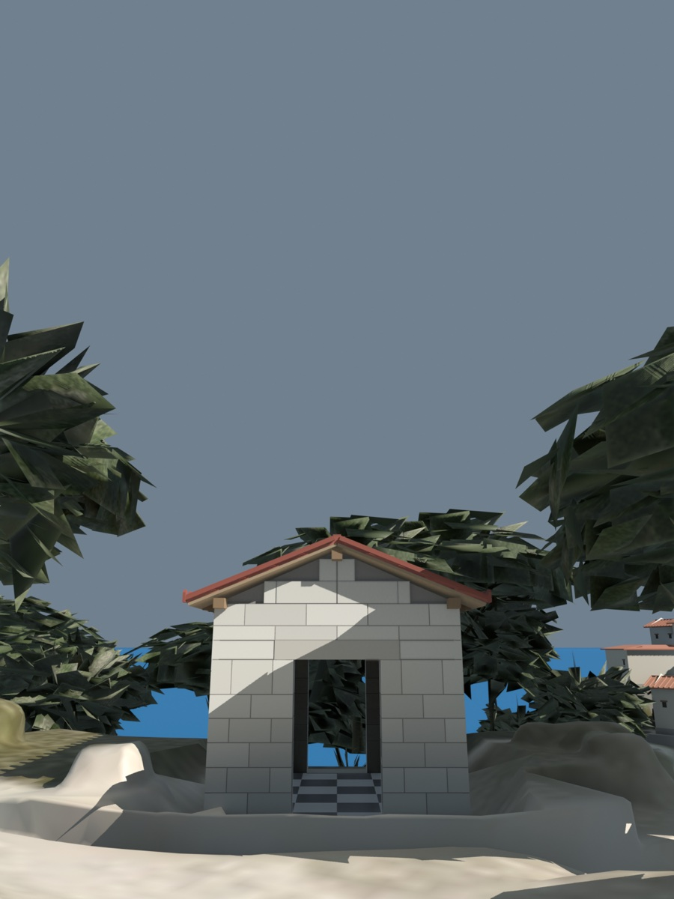
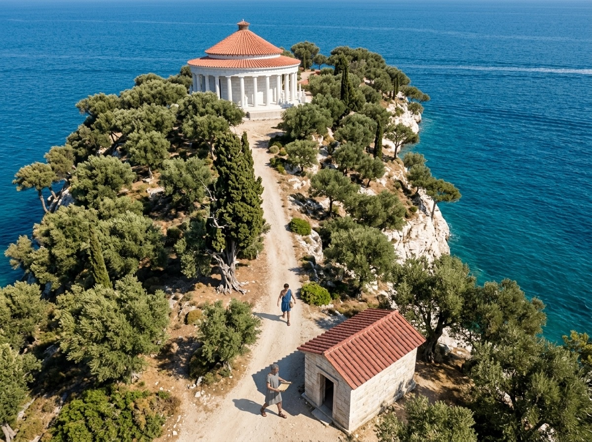
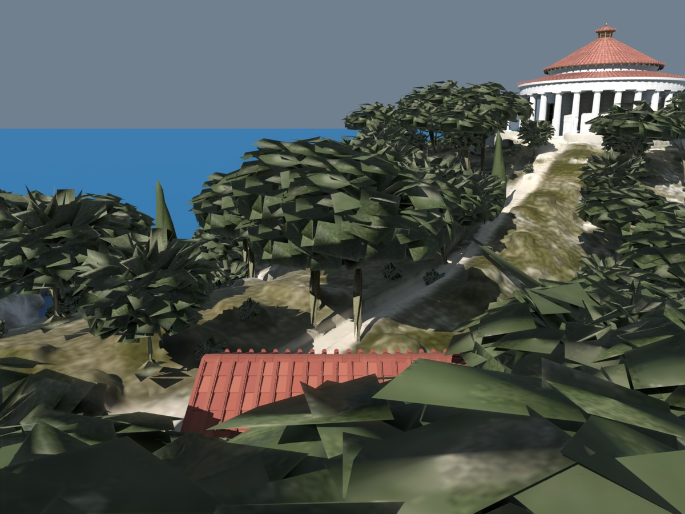
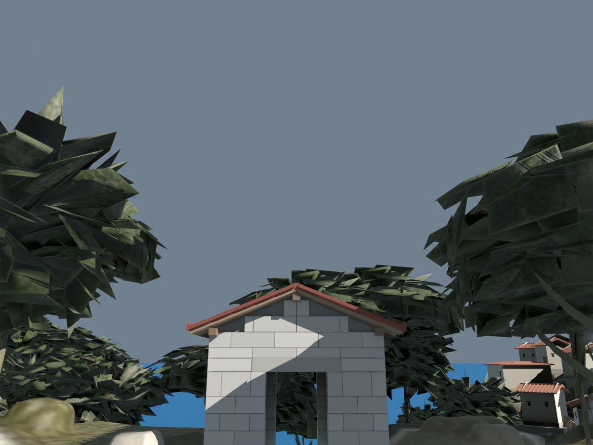
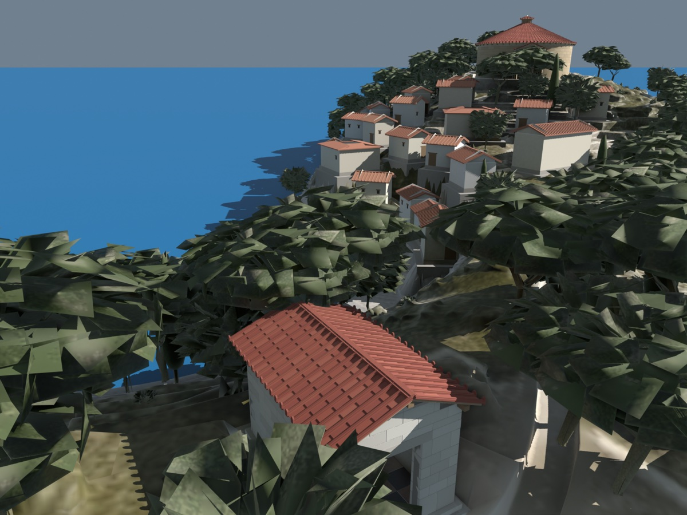
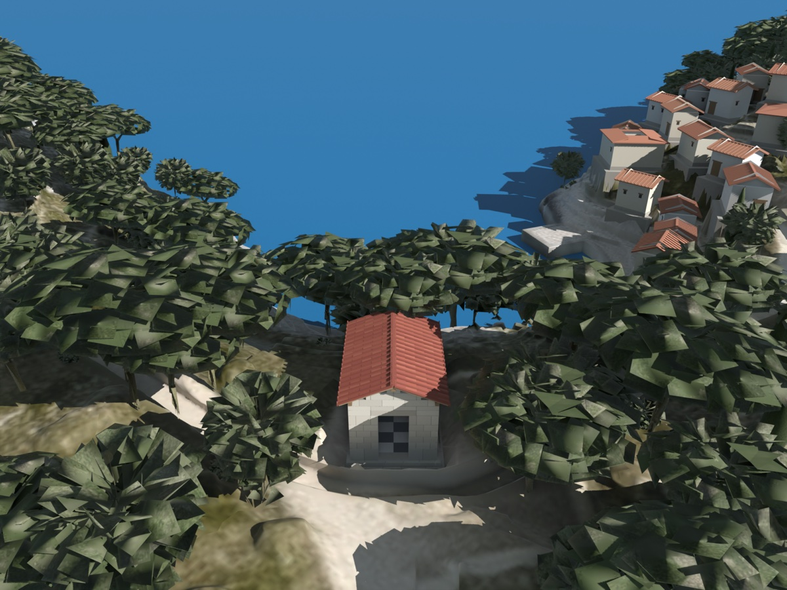

Which problems can machines solve without ever waiting for one another, and which force them to wait?
We find out by exploring how the scholars of Paxos told the questions they could settle alone from those that needed an assembly.
After Joseph M. Hellerstein, The Declarative Imperative: Experiences and Conjectures in Distributed Logic, 2010 · Tom J. Ameloot, Frank Neven and Jan Van den Bussche, Relational Transducers for Declarative Networking, 2011 · Joseph M. Hellerstein and Peter Alvaro, Keeping CALM: When Distributed Consistency Is Easy, 2020

Machines each hold part of the input and exchange the rest by messages that arrive late and in any order. Some programs give a consistent answer with no coordination. Others must wait until every machine has been heard from.
This edition tells it with questions brought to a small hall that has a door at each end.
Nothing has arrived. Each program outputs what it can.

At the fork of Paxos, where the island road divides to run out along the two arms, a small hall stands on common ground that belongs to neither city. It has a doorway in each end wall.*
The questions brought to the hall are ones the libraries of the island must answer from what they know. Each library holds some of the facts: a record of a copy made, a note of one work citing another, a word that a reader is waiting.
No library holds all of them. The rest come by courier, late and in no fixed order. A library may announce an answer whenever it is sure it will not have to take it back.
By the south door a library may answer without waiting on anyone. By the north door the libraries must first agree, as an assembly does.
Take two questions that sound alike. Has at least one copy of this work been made? A library that has heard of one copy may say yes at once, and whatever comes after, it is still yes. Is this every copy that has been made? A library that has heard of three may say yes, and then a fourth letter arrives.

A question only grows when each new fact can add an answer and no fact can take one away. A library that has heard part of the news can give every answer the part supports. It never has to ask whether it has heard enough.
The order the letters arrive in then cannot matter. A library that hears the facts in one order, or in batches, or twice over, ends with the same answers as any other.
A library that answers from part of the news is in no danger of being wrong later, so it need not wait for the couriers or agree with anyone. If every fact reaches every library in the end, all of them end with the same answers.

No letter has arrived.
One copy heard of is enough, and it stays enough.
A chain of citations, once found, stays found.
Each asks whether something exists. So does any property that, once true of a whole island, stays true.* Questions built from questions of this kind are of this kind too.
A program P is monotonic if for any input sets S and T with S ⊆ T, P(S) ⊆ P(T). In a question, anything answered on fewer facts is still answered on more. The papers call a question confluent when it gives the same answers whatever the order and grouping of the news.
A question rests on an absence when it asks whether something is not so. Is this every copy? means is there no copy beyond these? Has no one claimed this? means is there no claim?
The wording gives such questions away: every, no one, none, no longer. Each is a question about all the facts there are, and a library holds only some of them.
The answer there is none can be overturned by a single letter not yet read. Given on part of the news it is a guess, and it depends on when the library stops listening. Two libraries that hear the same facts in different orders can announce different answers on the way, and one of them will have to take its answer back.
For a question about every copy, a library must have heard from every other library, and heard from each that it has nothing more to say. That is the waiting of an assembly, where no decision is taken until everyone has spoken. It is the one thing a stopped courier prevents.

A library that holds a copy another has lent out is waited on by that other. No library sees more than its own links.
Library 1 knows that A waits on B. Library 2 knows that B waits on C. Library 3 knows that C waits on A. Pooled, the links make a ring, and nobody in a ring of waiting can go on.
The coast also keeps a canon of works it will keep, with the works the canon cites, and those they cite in turn. A work none of these cites is unwanted and may be thrown away. The canon cites X, as Library 1 knows. X cites Y, as Library 2 knows. Library 3 holds Y, and knows of nothing that cites it.
The ring asks whether a path exists. The unwanted work asks whether a path does not exist. To be sure, Library 3 must hear from the others that they have no further links, and to know it has heard from all of them it must know who all of them are.
A library that has heard from everyone must know who everyone is: a roster, the names of the libraries and how many there are.
Think of a librarian with no roster. Such a librarian can still answer every question that only grows: tell every library within reach all that is held, listen to all that is told, and give each answer the facts support. There is never a need to know whether everyone has been heard from.
Now take the plainest question that rests on absence: is the shelf empty at every library? Each library whose shelf is empty announces its name, and every library passes on the names it hears.
A librarian with the roster can answer any question at all: have every library send everything it holds, wait until all have, and answer as though the whole island were one shelf. That is the door of the assemblies. The scholars' door opens on fewer questions, and asks no price.
The link between growing, needing no roster and not waiting is a law. Hellersteinos put it first as a conjecture. Three scholars gave it a proof, and Hellersteinos and a colleague later restated it in plainer words.
Three descriptions of a question turn out to be the same.
Every library tells all it has and answers from what it holds. So a question that only grows can be answered with no roster.
A librarian with no roster cannot tell being alone from not being alone. Where each library already holds every fact, such a librarian answers without reading a letter.
Give some other library a fact the answering library never heard of. The answer already given must stand, because every way of answering must agree. An answer that is never taken back is one that only grows.
Without waiting needs care. A library that sends no letters at all would be too strict a test. The papers ask instead whether the facts can be shared out among the libraries in some way so that each already holds what it needs. If so, waiting was never forced, though with the facts placed badly letters may still be needed to move them.
A program has a consistent, coordination-free distributed implementation if and only if it is monotonic. Equivalently, for any query Q: Q is computed by a coordination-free transducer network, if and only if it is computed by an oblivious one, if and only if Q is monotone.
A network N of nodes runs a transducer Π at each node. The input I is spread over the nodes by a horizontal partition H. Π is oblivious if it uses neither the relation Id (its own identifier) nor All (the identifiers of all nodes). Π is coordination-free if on every network, for every I, some partition has a run that reaches quiescence by heartbeat transitions only, that is, without reading a message. Claim. A query Q is computed by a coordination-free transducer iff by an oblivious one iff Q is monotone.
The query asks, of an input set S spread over the nodes, whether S is empty. Id gives a node its own identifier and All the identifiers of all nodes; a heartbeat transition is a step in which a node reads no message. Claim. No transducer computes the query coordination-free, and the query is not monotone.
So a question that needs no waiting is exactly one a library can answer while the couriers are stopped. The scholars' door is the door that stays open when the couriers stop, and the door of the assemblies is not.
A reader keeps a reading list: titles wanted, added to and struck from along the way. At the end the reader closes the list, and the library fetches what is on it.
Adding a title only grows the list. Striking one can be written as a second list that only grows, the titles struck, and the two lists merge in any order.* Closing is different. It means there is nothing more on this list, and a closing notice that arrives before an earlier adding or striking closes the list without them.
Closing needs less waiting than it seems. With the closing notice the reader sends a manifest: the names of every notice sent before it. The library waits for the notices the manifest names and for no others.
Nothing has arrived.
The waiting is confined to the one step that needs it, and to exactly what it needs: the notices the manifest names, in whatever order they come.
A struck title stays on the second list until the coast agrees that every library has seen the strike. That agreement rests on an absence, and it can be settled slowly, in the background, on no reader's path.
A library that lends the last copy of a work to two readers at once can apologise, with a replacement or a note, in place of waiting for every library before it lends. The apology is the coast's way of agreeing afterwards.
The papers do not advise building everything out of questions that only grow. They advise finding out which steps do, so that the waiting falls only on the steps that cannot be otherwise.
The scholars' coast has been asking such questions all along.
The count of copies made, kept in pebbles on the far terraces, only grows.* So does a catalogue of titles that is only added to, and the rule that of two editions the larger tally stands.* Corrections bound under one cord, and a reply held for its letter, are promises a library keeps from its own shelves while the couriers are stopped.*
Those that leave by the other door all rest on an absence. Whether the last copy has been lent twice. Whether a copy is the latest edition. Whether an old notice may be thrown away. And putting acts that happened apart into one order, which no library holding part of the news can do alone.

Choose a question.
There is no third door. A question only grows or it does not. What can fail is a person telling a question's shape from its wording alone: some questions that look as if they rest on an absence only grow in disguise, and the papers leave that checking to those who write the questions.
The hall sorts every question. Five things it does not do.
No. It says which questions can be answered that way. It gives no way of finding a growing form of a question that was put so as to rest on an absence. The papers name the two questions a builder is left with: whether the problem has a growing form at all, which is the harder, and how to carry it out.
Not to the letter. It was put in terms of one particular logic of rules, and the proof shows that to be too narrow: some growing questions cannot be said in those rules. What survives is the link between growing and not waiting.
No. The libraries may start from a good sharing of the facts, and letters are not forbidden. The papers do not claim theirs is the only definition, only that it is workable and that the law holds under it.
No. It promises that the outcome is the same whatever order the news came in, and nothing about how recent it is. Nor does it say the waiting must be on the reader's path: only that something has to do the agreeing.
How much more can be answered without waiting if each library knows the rule by which facts are shared out; whether a question's shape can be checked mechanically; and what to make of an answer that is certain enough without being certain.
Every question is a program, and its door is whether it needs coordination. Hover or tap to see who is who.
A program has a consistent, coordination-free distributed implementation exactly when it is monotonic.
The line is bright, and it is no recipe: it does not say how to find a monotonic form of a problem.
Setting The Hall of Two Doors
Follows Changes That Never Clash · What You Can Promise Alone
Outside this series Gilbert & Lynch 2002, Brewer's conjecture · Alvaro et al. 2011, Consistency analysis in Bloom · Zinn, Green & Ludäscher 2012, Win-move is coordination-free (sometimes)
Joseph M. Hellerstein, The Declarative Imperative: Experiences and Conjectures in Distributed Logic. SIGMOD Record 39(1), 2010, 5–19; the text of the keynote at the ACM Symposium on Principles of Database Systems (PODS), 2010. — The CALM conjecture and its companions.
Tom J. Ameloot, Frank Neven and Jan Van den Bussche, Relational Transducers for Declarative Networking. arXiv:1012.2858, December 2010; Journal of the ACM 60(2), 2013. — The formal definitions of consistency and coordination-freeness and the proof of the CALM theorem.
Joseph M. Hellerstein and Peter Alvaro, Keeping CALM: When Distributed Consistency Is Easy. arXiv:1901.01930, January 2019; Communications of the ACM, 2020. — The theorem restated, with examples, design patterns and open questions.
The ideas, plainly.
Hellerstein asked which computations a group of machines can carry out without ever waiting for one another, so that they stay available when the network is cut and are not slowed by coordination. His conjecture, CALM, is that those are exactly the monotone computations: ones whose output only grows as the input grows, so that no answer ever has to be retracted. Deadlock detection is monotone, since a cycle found stays found. Garbage collection is not, since to be sure an object is unreachable a machine must know that it has heard everything.
Ameloot, Neven and Van den Bussche proved it in a model of machines running relational queries and exchanging facts. A computation is coordination-free if there is some distribution of the data on which it reaches its answer without messages; they show this is exactly the monotone queries, and also exactly those answered by machines that know neither their own names nor the others'. Without that knowledge a machine cannot tell that it has heard from everyone, which is what a non-monotone query needs.
Hellerstein and Alvaro restate it for practice. A non-monotone step can often be isolated and sealed, so that only it waits, and only for what it names; coordination can be moved off the critical path; or an error can be apologised for afterwards. The result is a bright line, not a recipe: it does not say how to find a monotone form of a problem, and what it guarantees is that the outcome does not depend on the order of the news, not that it is the newest.
Hellersteinos stands for Joseph Hellerstein, the author of the first and third papers. The papers have five authors, Joseph M. Hellerstein, Peter Alvaro, Tom J. Ameloot, Frank Neven and Jan Van den Bussche, and all are credited here; only Hellersteinos is named, and the librarians and scholars are told apart by what they do.
| the hall of two doors, sorting and never ruling | The CALM theorem as a classification of programs. Hellerstein–Alvaro §1.4; Ameloot et al. §6. |
| a question brought to the hall | A program or query. Ameloot et al. §2. |
| the facts held by each library; the rest by courier | A network of machines, the input horizontally partitioned across them; asynchronous messages. Ameloot et al. §3. |
| a question that only grows | A monotonic program: S ⊆ T implies P(S) ⊆ P(T). H–A Definition 1. |
| the same answers whatever the order and grouping of the news | Confluence, program consistency; consistent networks. H–A §2.1; Ameloot et al. §3. |
| a question that rests on an absence | A non-monotonic program: negation, set difference, universal quantification, deletion. H–A §1.4, §2.2. |
| a ring of waiting | Distributed deadlock detection: cycles in a waits-for graph; monotone. H–A §1.3.1. |
| a work no one cites, thrown away | Distributed garbage collection: unreachability from the root; non-monotone. H–A §1.3.2. |
| a once-true, always-true property | A decision on incomplete information that is stable. H–A §1.3.1. |
| the scholars' door: no waiting | Coordination-freeness. Ameloot et al. §5; H–A Theorem 1. |
| the door of the assemblies: waiting | Coordination: Paxos, two-phase commit, barriers. H–A §1.1. |
| a sharing of the facts on which no letter is needed | Coordination-free: some horizontal partition and a run to quiescence by heartbeat transitions only. Ameloot et al. §5. |
| the librarian with no roster | An oblivious transducer: uses neither Id nor All. Ameloot et al. §5, Proposition 11. |
| the roster; heard from everyone | The All relation: network membership. H–A §2.2. |
| every library tells all it has; with a roster, any question can be answered | Theorem 6: monotone queries by oblivious transducers; every query with the network known. Ameloot et al. §4. |
| is the shelf empty at every library? | The emptiness query: not coordination-free. Ameloot et al. Example 10. |
| growing, no roster, no waiting, one property | The CALM property: coordination-free ⇔ oblivious ⇔ monotone. Ameloot et al. Corollary 13. |
| the stopped couriers, and the door that stays open | Coordination-freeness equals availability under partition. H–A Observation 1. |
| the reading list: adds and strikes as two growing lists | The shopping cart as two growing sets (Dynamo); tombstones. H–A §2.1.1, §3.1. |
| closing the list, with a manifest of notices before it | Checkout enhanced with a manifest of update message IDs; sealing the non-monotone step. H–A §2.1.1. |
| settling the struck titles slowly in the background | Coordination off the critical path: lazy distributed deletion. H–A §3.4. |
| apologising for a lending, not preventing it | Compensation in place of coordination. H–A §3.4. |
| the conjecture's rules too narrow | The Datalog form of CALM is false literally; the monotone form is proved. Ameloot et al. §6. |
| no way given of finding a growing form | CALM is not a constructive result. H–A §6. |
| which questions can be answered if the libraries know how facts are shared out | Expressiveness; weaker forms of monotonicity. H–A §4.1. |